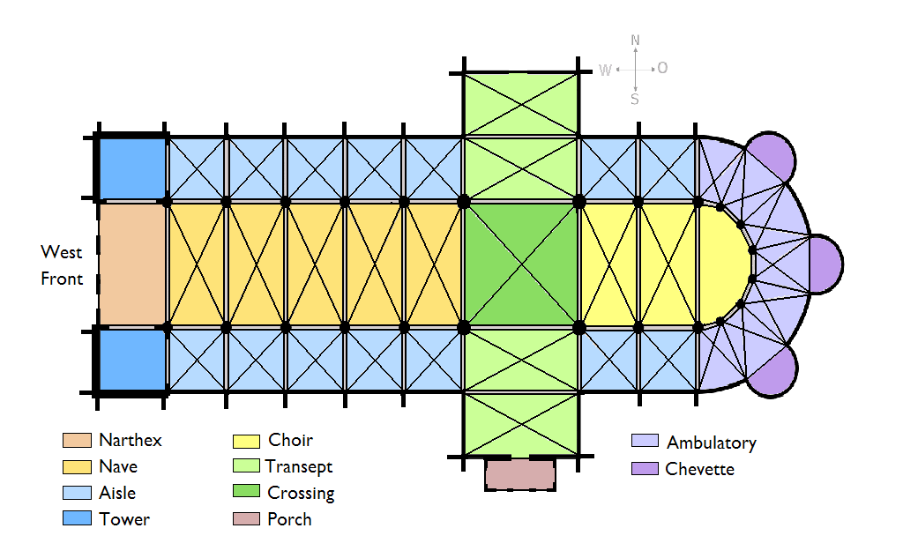
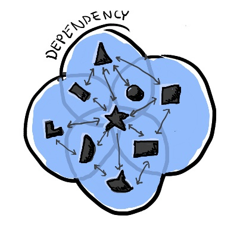

Funkcionální architektura ve vodách Angularu
Náplň dnešního povídání
- Architektura, proč se jí zabývat?
- Objektově orientovaný přístup
- Funkcionální přístup
- Angular - stavu všanc
- Angular - zkrocení stavu
Architektura

Je procesem i produktem plánování, návrhu a konstrukce staveb
nebo jiných struktur.
Architektura
- Elementy
- Vztahy mezi elementy
- Vlastnosti elementů a vztahů mezi nimi
Objektově orientovaný přístup
- Království jmen - The Kingdom of nouns
- Elementy - třídy (blueprints), objekty, metody
- Programování dominantně s vedlejšími efekty
- => všudypřítomný stav
S.O.L.I.D.
| Písmeno | Znamená | Koncept |
| S | Single responsibility principle | Třída by měla mít jenom jediný důvod pro změnu (specifikace chování) |
| O | Open/closed principle | Třídy mají být otevřené pro rozšíření, ale uzavřené pro modifikaci |
| L | Liskov substitution principle | Potomek třídy může v implementaci vždy nahradit předka |
| I | Interface segregation principle | Více jednoduchých klientských rozhraní je zpravidla lepší než jedno velké univerzální rozhraní |
| D | Dependency inversion principle | Závislosti na abstrakci nikoli konkrétní implementaci. Také spojováno s Hollywood principle = “Don’t call us, we’ll call you” |
The Law of Demeter = Princip minimální znalosti
Třídy mají komunikovat pouze s blízkými spřátelenými třídami.
"Talk only to your immediate friends"
ZOO návrhových vzorů v OOP
| Abstract factory | Adapter | Builder |
| Chain of responsibility | Command | Decorator |
| Flyweight | Observer | Proxy |
| Mediator | Memento | Singleton |
| Strategy | State | Template method |
Co je cílem OO architektury?
- Obvykle jde o ustanovení hierarchie komponent a tříd, které vzájemně participují na řešení problému
- Naplnění výše zmíněných principů má zajistit flexibilitu řešení, správnost a snadnou testovatelnost
- V praxi jsou ovšem běžné zásadní odchylky od teorie a zvolené modely fungování nebývají zakotvené v realitě
- Udělat správně OO architekturu je nejméně o řád těžší než slibují učebnice
Lékař, architekt a programátor se přou o to, čí povolání je nejstarší. Lékař praví “Eva byla stvořena z žebra Adamova. Byl to první chirurgický výkon. Medicína je tedy nejstarším povoláním.” Architekt se nesouhlasně zamručí. “I kdepak! Bůh musel nejdříve svět navrhnout a za šest dní postavit. Byl tedy první architekt. Předtím byla jenom prázdnota a chaos.” Programátor, který dosud jen poslouchal se zle pousmál “Pánové, odkud si myslíte, že se vzal ten chaos?”
Funkcionální přístup
- Království sloves - The Kingdom of verbs
- Elementy - funkce, hodnoty, kompozice = funkce jako hodnoty
- Programování dominantně bez vedlejších efektů
- Eliminace nebo alespoň minimalizace stavu
Funkce I.
- Funkce bez vedlejších efektů - čisté (pure) funkce - matematické vlastnosti
- Funkce s vedlejšími efekty - nečisté (impure) funkce
Funkce II.
- Funkce jako návratová hodnota nebo parametr (funkce vyšších řádů)
- Funkce jako rozhraní
- Funkce jako naplněný princip jediné odpovědnosti entity
“Sometimes, the elegant implementation is just a function.
Not a method.
Not a class.
Not a framework.
Just a function.”
-- John Carmack @ twitter
Otázka
Které království byste si vybrali?
Jakou architekturu má Angular?
OOP. Komponenty. Služby. Třídy s metodami.
Detekce změny stavu = Dirty checking. Změny se aplikují dle šablony do DOMu a na obraz.
RxJS, reaktivní asynchronní streamy. Modelují koncept hodnot v čase pomocí operátorů - podoba s API objektu Array.
Stavební bloky aplikací v Angularu
- Komponenty
- Služby
- Dependency Injection
- Direktivy
- Moduly
- Router
- Roury (pipes)
Komponenty
Komponenty označujeme dekorátorem @Component, který může obsahovat dodatečná metadata
Metadata říkají Angularu kde se nacházejí bloky, nutné pro spuštění komponenty.
@Component({
selector: 'nice-button',
template: ``,
styles: [...]
})
export class NiceButton {
constructor() {}
// methods
}
Šablony
<p><i>Vyber superhrdinu ze seznamu</i></p>
<ul>
<li *ngFor="let hero of heroes" (click)="selectHero(hero)">
{{hero.name}}
</li>
</ul>
<hero-detail *ngIf="selectedHero" [hero]="selectedHero"></hero-detail>
Data binding (pojivo)
- Interpolace:
{{obj.name}} - Property binding:
[member] - Event binding:
(click)="pickOne(data)" - Two-way binding:
[(banana)]
Služby
Znovupoužitelná business logika
Služba je obvykle třída s úzce vymezenou zodpovědností
Je označena dekorátorem @Injectable() aby mohla participovat v DP
Ukázka služby
@Injectable()
export class SuperService {
doTrick() {
return "Trick one";
}
doAnotherTrick(a: number, b: number) {
return Math.max(a, b) / 2;
}
}
Dependency Injection I.
Dependency injection II.
@Component({
selector: 'time-picker', template: '',
providers: [TimePickerService]
})
export class TimePicker {
constructor(public service: TimePickerService) { }
// ^^^^^^^^^^^^^^^^^^^^^^^^^^
ngOnInit() { this.service.pick(); }
// ^^^^^^^^^^^^^^^^^^^ použití závislosti
}
@Injectable()
export class TimePickerService {
pick() {...}
}
Dependency injection
@Injectable()
export class TimePickerService {
constructor(private conversion: ConversionService) {}
pick() { this.conversion.convert(10); }
}
@Injectable()
export class ConversionService {
constructor() { }
convert(a: number): string { }
}
Direktivy
V kostce... dávají existujícím prvkům nové vlastnosti.
- Strukturální direktivy
- Atributové directivy
Strukturální directivy
Mění strukturu a složení v závislosti na přidávání, odstraňování nebo změně stavu.
<li *ngFor="let hero of heroes"></li>
<hero-detail *ngIf="selectedHero"></hero-detail>
Atributové directivy
Mění vzhled nebo chování existujících elementů. V šabloně jsou deklarované jako běžné atributy html prvků a proto nesou toto označení.
- ngStyle
- ngClass
- ngSwitch
- ngForm
Signál
Deaktivovat
ngForm
Odpovídá přibližně tomuto:
<input
[ngModel]="firstName"
(ngModelChange)="firstName = $event">
Funguje jen pro elementy formulářů.
Moduly
@NgModule({
imports: [ BrowserModule ],
declarations: [ AppComponent ],
bootstrap: [ AppComponent ],
providers: [ AppService ]
})
export class AppModule {}
Routing
Směrování požadavků
const appRoutes: Routes = [
{ path: 'hero/:id', component: HeroDetailComponent },
{ path: 'crisis-center', component: CrisisListComponent },
{ path: 'heroes', component: HeroListComponent,
data: { title: 'Heroes List' }},
{ path: '', component: HomeComponent },
{ path: '**', component: PageNotFoundComponent }
];
@NgModule({
imports: [ RouterModule.forRoot(appRoutes) ]
})
Roury / pipes
The hero's birthday is {{ birthday | date: "MM/dd/yy" }}
async pipe
Redux
Architektura tvorby aplikací populární převážně ve světě Reactjs
- Store
- Actions
- Reducers
- View = Komponenty + šablony

Store
- Drží aplikační stav, je to jediný zdroj pravdy
- Je konceptuálně jen pro čtení
- Změny stavu se realizují pouze odesláním akce (Action)
Action
- Obsahuje své označení a případně nějaká data
- Akce se předává Store (dispatch)
- Store vybere reducer a nechá jej zpracovat akci
Reducer
- Čistá (pure) funkce
function reducer(state, action) { ... return newState; }- Obvykle jde o celou paletu reducerů, každý zpracovává jinou část stavu
View
- Zobrazí (nový) stav aplikace
- Aktualizuje se tak, že se přihlásí k odběru změn stavu ze Store
Sada knihoven NgRx
- @ngrx/store - Implementace Redux storu pomocí knihovny RxJS
- @ngrx/effects - Knihovna na vedlejší efekty pro store
- @ngrx/router-store - Napojení angular routeru na store
- @ngrx/store-devtools - Enhancer pro store s podporou debugger s vlastností cestování časem
- @ngrx/entity - adaptér na entity, umožňuje snadnou implementaci CRUD
Benefity NgRx / Reduxu
- Deterministické renderování
- Deterministická reprodukce stavu
- Oddělení asynchronních operací od synchronní práce se stavem
- Snadné testování
- Jednoduché undo/redo
- Time-travel debugging
- Snadná serializace
Proč nepoužít NgRx / Redux
- Uživatelská workflow jsou jednoduchá / celoobrazovková
- Uživatelé nespolupracují v rámci aplikace
- Nezpracováváte websockety nebo SSE (server-sent events)
- Získáváte pro každé view jen jeho data